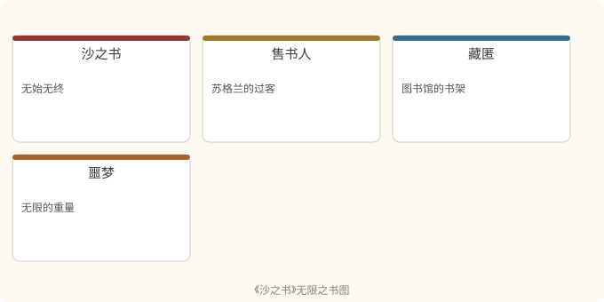

沙之书
一、基本信息
| 作者 | 博尔赫斯 |
|---|---|
| 成书/出版 | 1975年（作者页 B095 口径：沙之书（1975）） Jorge Luis Borges — Encyclopaedia Britannica（百科全书） |
| 国别/地区 | 阿根廷 |
| 时代 | 现当代 · 20世纪 |
| 体裁 | 短篇小说集 |
| 语言 | 西班牙语 |

《沙之书》无限之书图（主题·结构图）
二、创作背景
作者页（B095）：博尔赫斯 major_works 载'沙之书（1975）'（B095 作者页定位，详见 xiaojing 条核对）。
同名篇（通说待核）：'沙之书'——无始无终、页码无限的书。
三、内容脉络
同名篇：售书人与'圣书'——书页无限增殖的噩梦（通说待核）。
《乌尔里卡》《另一份死亡》等篇（篇目通说待核）。
四、主要人物表
| 人物 | 身份 | 说明 |
|---|---|---|
| '我' | 藏书者 | 被书囚禁（通说待核） |
五、主题与艺术特点
- 无限的书的噩梦（通说）。
- 占有与放手（通说待核——结尾藏于图书馆）。
- 晚期的简洁（通说）。
六、影响与评论
- 作者页：博尔赫斯晚期集（B095 作者页口径）。
Jorge Luis Borges — Encyclopaedia Britannica（百科全书） - 博尔赫斯晚年盲后口述写作的集子（通说待核）。
Jorge Luis Borges — Encyclopaedia Britannica（百科全书）
七、阅读建议
难点
- '无限书'的设定。
- 晚期文体的极简。
- 《沙之书》（上海译文出版社，通说待核）。
- 西班牙文原版。
博尔赫斯收官阅读。
八、待核实
- 篇目核对。
- 1975年出版（Emecé说）核对。
- '书页无限'设定待核。
本页主要来源
博尔赫斯的其他收录作品：虚构集